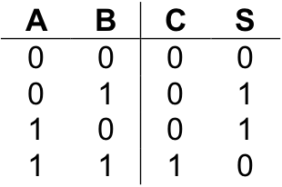
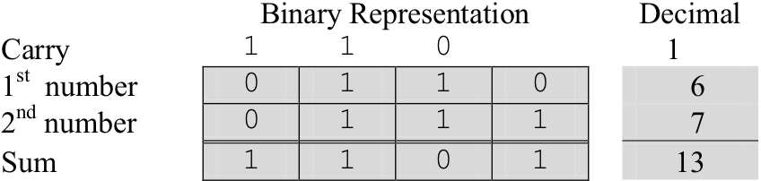
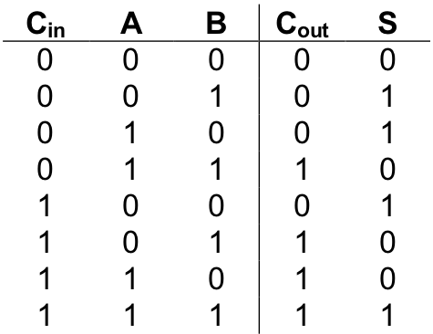
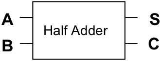
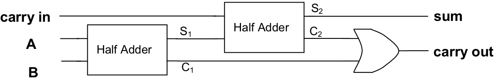
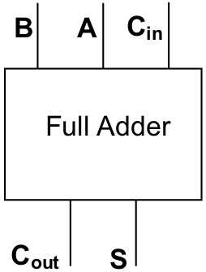
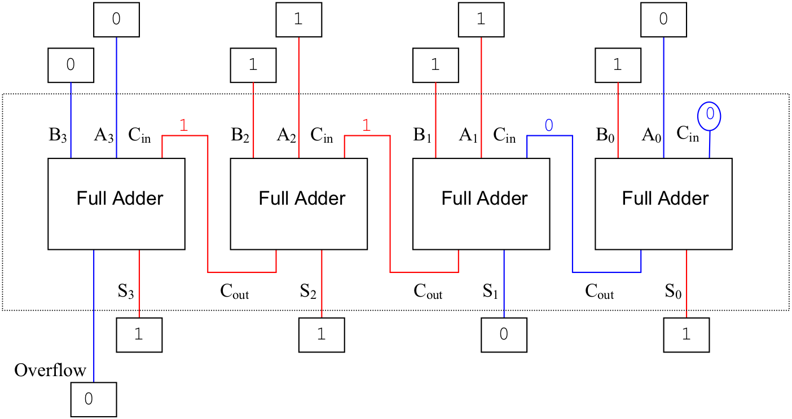

An “adder”, as its name implies, is a circuit for adding binary numbers. In () we studied binary arithmetic, including binary addition. As you may recall from that discussion, the addition of two single-bit binary numbers can be defined by a table such as:
where “A” and “B” represent the two single-bit inputs, “S” represents the sum of those inputs, and “C” represents a possible carry. The first line of the table illustrates “0 + 0” equals “0”. Lines two and three correspond to “0 + 1” and “1 + 0” both of which equal “1”. The last line of the table represents “1 + 1” which equals two (10two ). This value is represented by placing a “0” in S, the sum, and a “1” in C, the carry.
A circuit to implement the behavior of this table will need two inputs (one for each of the single-bit numbers) and two outputs (one for the sum and one for the carry). Constructing such a circuit is fairly straightforward. Notice that the values in the S column correspond to an exclusive or, xor , of the two inputs, while the values in the C column correspond to an and of both inputs. The circuit can thus be constructed from these two sub-circuits as illustrated in .
An implementation of a “half adder”
This circuit is called a “half adder”. While a half adder does add two single-bit numbers and can generate a carry, it has no provision for a carry input into the circuit. Recall from our discussion of binary addition that when adding two multi-bit binary numbers one works column by column from right to left making sure that the carry bit from the previous column is added into the current column. Here is an illustration of this process on six and seven, represented as four-bit unsigned binary numbers.
A half adder could be used to add the right-most (low-order) bits of the two numbers, but it is not general enough to add the digits of an arbitrary column, since it does not support a carry as input.
A “full adder” overcomes this limitation of the half adder by allowing a carry to be fed into the circuit along with a bit from each of the numbers to be added. Thus, a full adder will have three inputs: the two bits being added plus the carry in. Only two output bits, the “sum” and “carry out”, are needed because the largest result that can be produced by the circuit will be three (11two ). This occurs when all three inputs are set to “1”. Here is a complete truth table for a full adder. The inputs have been labeled “Cin ”, “A”, and “B”; the outputs “Cout ” and “S”.
Designing a circuit to implement this behavior “from scratch” would be challenging. However, through careful observation and the use of two half adders, the job is manageable. Since we’ll be using half adders to build the full adder, our circuit diagram will be simpler if we imagine the half adder encapsulated into a “black box”, as shown below:
 A full adder implemented using two half adders
The trick to building a full adder is to think of the sum of the three terms, A + B +Cin , as a sequence of two sums associated left to right: ( A + B ) + Cin . One half adder will be used to compute the sum A + B. The “sum” bit output by this half adder, along with Cin , will be fed as input into a second half adder. The “sum” bit produced by the second half adder will serve as the “sum” bit of the full adder. The “carry out” bit of the full adder is produced by routing the “carry out” bits of both half adders into an or gate.
illustrates the full adder in outline form. Development of a complete implementation of the full adder using only and , or , and not gates is left as an exercise. You should also be sure to verify that this circuit does, in fact, generate the truth table for binary addition.
Just as we encapsulated the half adder, we can encapsulate the single-bit full adder into a black box.
This representation looks a little different than the circuit of because it has been rotated clockwise 90° to make the following diagram easier to read. Be assured, however, that the inputs, outputs, behavior, and internal details of the circuit remain unchanged.
An implementation for a four-bit adder using four one-bit adders
Multi-bit adders can be implemented as a chain of single-bit full adders where the “carry out” of each adder is routed to the “carry in” of the adder immediately to its left. Under this scheme each full adder is essentially responsible for adding a single bit of each of the two input numbers, plus the carry bit generated by the adder immediately to its right. The “carry in” for the rightmost adder is permanently set to 0. The “carry out” of the leftmost adder indicates whether or not addition of the inputs produces an overflow.
illustrates a four-bit adder constructed from four single-bit adders. In this example, input A holds the number six (0110two ) while input B holds seven (0111two ). The result of this addition operation is the four-bit unsigned number 1101two , or thirteen, with a carry (overflow) of zero.
Exercises for
Draw the complete circuit for a single-bit full adder using only gates, wires, and connectors.
Draw the complete circuit for a two-bit full adder using only gates, wires, and connectors.